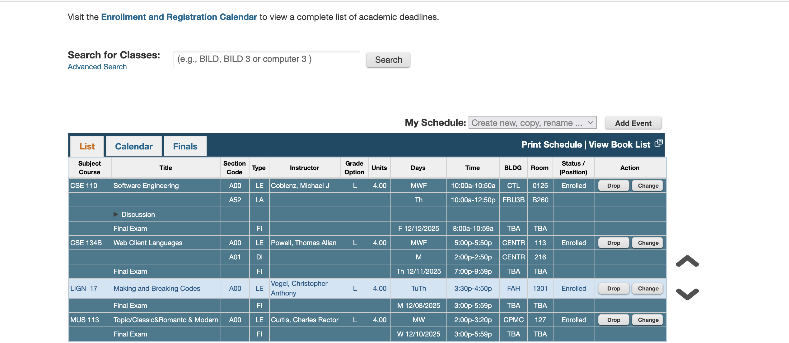

Webreg to Google Calendar
Description
This is a firefox extension that allows UCSD students to import their course schedule to Google Calendar with a click of a download. No csv downloads necessary. This can save a students time by no thaving to input everything manually. Simply click on "import schedule", sign in with the google account you need, and click "Import Schedule" again. Simple as that.
Scope of Work
The duration of this project was a about a month of work. It started with me learning javascript and HTML. I learned the concept of "Manipulating the DOM", which is important for webscraping. I made a javascript program to scrape the course schedule using the DOM.
Once the courses had been scraped, the courses are then stored in a hashtable. We have a function that handles parsing that course data, organizing it by discussions, midterms, and finals, as well as course code, professor, etc.
Once the course have been parsed, the Google Calendar API comes in. We have functions that create events using the API. Now before all this info can be process, we must handle Google Auth2.0. This was the hardest part. After many hours of figuring it out and looking at source code, the Authoraztion was setup. After signing in with Google, the events are then processed with the API and voilà, your schedule is set and imported.